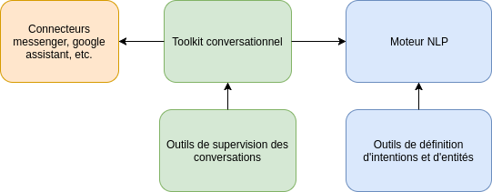

Bienvenue dans la documentation de Tock!¶
Présentation¶
Tock (The Open Conversation Kit) est une boite à outils permettant de construire des agents conversationnels (ou bots).
Contrairement à la plupart des autres solutions, il ne dépend pas d’API tierces (mais peut en intégrer aisément si nécessaire) : il est donc possible de conserver le contrôle complet de ses données et de ses algorithmes.
Le code source de l'ensemble se trouve sur github : https://github.com/voyages-sncf-technologies/tock sous la licence Apache 2.
Deux composants majeurs sont disponibles, le moteur NLP ( pour Natural Language Processing ou TALN en français), et un framework conversationnel qui intègre les services NLP et différents connecteurs comme Messenger, Google Assistant ou Slack.
La composante NLP est indépendante de la partie conversationnelle. Il est donc possible d'utiliser le NLP sans devoir maîtriser la complexité induite par la gestion des conversations. Dans certain cas d'usage importants, comme l'Internet des objets, l'utilisation d'un modèle NLP seule est pertinente.

Une plateforme pour construire des modèles d'analyse du language naturel¶
Interface d'administration¶
L'outil principal est constitué par une interface d'administration qui permet de qualifier des phrases afin de construire des modèles de traitement automatique du langage naturel ( TALN ) :

Suivi de qualité des modèles¶
Cette interface fournit également les outils pour faire évoluer les modèles et permet de monitorer leurs pertinences :

Stanford CoreNLP ou Apache OpenNLP¶
La construction automatique des modèles est basée sur une de ces solutions open-sources (au choix). Tock fournit un niveau d'indirection qui permet d'intégrer d'autres librairies NLP. L'intégration de SparkNLP est d'ailleurs en cours d'étude.
Duckling¶
Un outil de parsing de dates et de types simples basé sur la librairie open-source Duckling est également intégré par défaut.
API NLP¶
Les modèles peuvent être utilisés via l'API mis à disposition.
Un framework conversationnel¶
Ce framework est la deuxième brique qui permet de construire des assistants.
Elle utilise la brique de TALN de Tock via son API.
Gestion du contexte et de l'historique¶
La gestion des contextes des dialogues et de l’historique des conversations est automatiquement disponible. Des notions avancées comme la fusion d'entités sont également mis à disposition. (par exemple le fait de préciser la date "demain" puis plus tard "plutôt le soir" met automatiquement la valeur de la date à jour)
Connecteurs tiers¶
Des connecteurs à Facebook Messenger, Google Assistant et Slack sont disponibles. Il est possible d'en créer facilement d'autres, que ce soit pour se connecter à d'autres canaux ou pour répondre à des besoins spécifiques.
Suivi des conversations¶
Enfin une interface d'administration est mise à disposition et permet de tester les bots et de suivre les conversations des utilisateurs.
Genèse du projet¶
Le projet a été initié en 2016 par l'équipe Innovation de Oui.sncf dans un premier temps afin de motoriser l'analyse des commandes vocales sur ses applications mobiles.
L'outil a ensuite été utilisé pour implémenter son Bot Messenger.
Depuis, une équipe dédiée au sein de OUI.sncf fait évoluer et maintient la solution.
L'assistant Google OUI.sncf est également basé sur Tock, de même que le OUIbot.
Les outils ont été open-sourcés dans le but de mutualiser l'effort avec d'autres équipes qui souhaiterait développer des assistants ou bots.
Technologies¶
La plateforme applicative se base sur la JVM.
Le langage de référence est Kotlin.
Le reste de la panoplie applicative est constituée de Vert.x et MongoDB, même si pour l’instant les applications sont essentiellement développés en « blocking IO ». En cible, l’approche « fibers » ( cf http://docs.paralleluniverse.co/quasar/) sera privilégiée.
Les interfaces d'administration sont implémentées en Angular4/Typescript.
Cependant il est tout à fait possible de développer des applications en utilisant d'autres languages de programmation via les APIs mis à disposition.
Les différents projets open-sourcés¶
-
Le projet principal se trouve sous licence Apache OpenNLP. Le code source est disponible sur GitHub : https://github.com/voyages-sncf-technologies/tock
-
Cependant une dépendance optionnelle, Stanford CoreNLP, est sous licence GPL. Le code utilisant cette dépendance se trouve donc dans un projet à part, sous licence GPL : https://github.com/voyages-sncf-technologies/tock-corenlp
Enfin deux autres projets sont mis à disposition :
- Un projet contenant des images dockers avec comme objectif de faciliter la prise en main : https://github.com/voyages-sncf-technologies/tock-docker
- Un projet contenant un exemple d'implémentation de bot se basant sur les API SNCF en Open Data : https://github.com/voyages-sncf-technologies/tock-bot-open-data